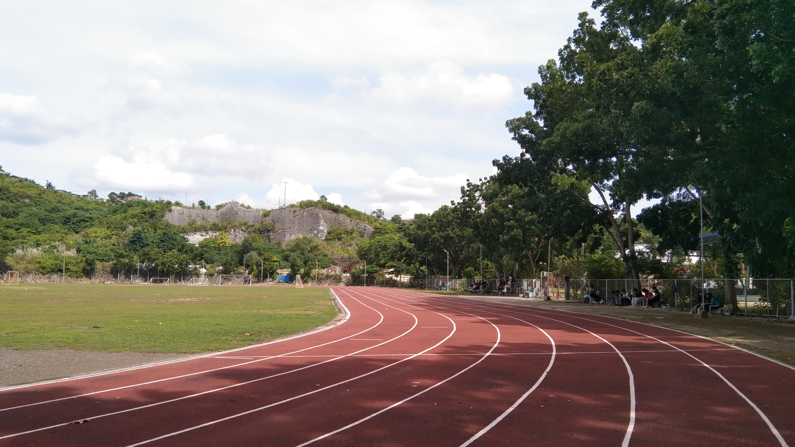

The Cebu Technological University Oval in Danao Campus, officially known as the Ramon M. Durano Sr. Memorial Sports Complex, stands as an iconic sports and events venue in Danao City, Cebu. Its 8-lane rubberized track has been designed not only to cater to university athletes but also to attract aspiring fitness enthusiasts and the community at large. The state-of-the-art facility has become the go-to location for a multitude of events, ranging from university athletic meets to grand concerts, festivals, and other prestigious gatherings.

The CTU Oval has redefined its role beyond a mere sports complex. It serves as a multifaceted arena that brings together people from various
walks of life. Its multipurpose nature is exemplified through its capacity to host a variety of events, providing a platform for both
physical and cultural engagement. This year, it has become the venue for some of the most memorable celebrations in Danao City.
1. Kalikasan, Kabataan, Kalayaan: A Youth Music Festival
One of the standout events at the CTU Oval this year was the “Kalikasan, Kabataan, Kalayaan” (Nature, Youth, Freedom) music festival.
Held on June 12, 2024, the festival was a vibrant celebration of youth and national pride, aligning with the Independence Day festivities.
Organized by the SAVE ME Movement (Students’ Actions Vital to the Environment and Mother Earth Movement), the event was a testament to
the organization’s commitment to environmental advocacy and youth empowerment.
Source: Kami Naman Ph
The festival featured stellar performances by prominent Filipino artists, including KZ Tandingan, Illest Morena, Yuki Sakamoto, Playertwo, and Over October. Their energetic performances set the tone for an inspiring evening, captivating the audience with music that resonated deeply with the themes of freedom and progress. Hosted by CJ Villavicencio, the concert not only entertained but also highlighted the importance of environmental stewardship, leadership, and youth involvement.